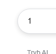
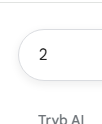

<script>
    function zamien(){
        let img1=document.querySelector("#jeden")
        let img2=document.querySelector("#dwa")
        img1.setAttribute("src", "obraz2.png")
        img2.setAttribute("src", "obraz1.png")
    }
setInterval(zamien, 5000);
    function zamien2(){
        let img1=document.querySelector("#jeden")
        let img2=document.querySelector("#dwa")
        img1.setAttribute("src", "obraz1.png")
        img2.setAttribute("src", "obraz2.png")
    } 
setInterval(zamien2, 10000);
</script>